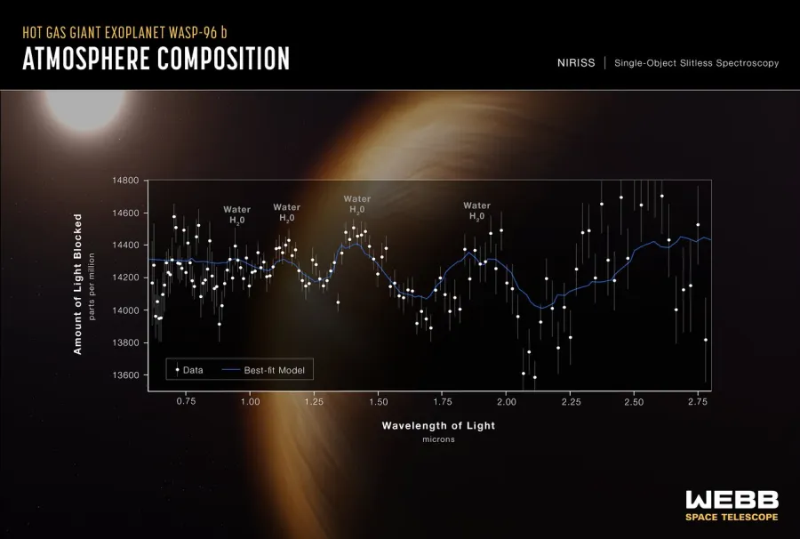

12. Juli 2022
WASP-96 b: Wasser in einem der ersten Webb-Spektren
Zu den ersten veröffentlichten Ergebnissen des James-Webb-Weltraumteleskops gehörte am 12. Juli 2022 ein Spektrum des Gasriesen WASP-96 b. Das Instrument NIRISS beobachtete am 21. Juni 6,4 Stunden lang, wie der Planet vor seinem Stern vorbeizog, und maß das durch die Atmosphäre gefilterte Sternlicht bei 0,6 bis 2,8 Mikrometern.
Das Spektrum zeigt die eindeutige Signatur von Wasser sowie Hinweise auf Dunst und Wolken, die frühere Beobachtungen nicht erkennen ließen. WASP-96 b ist rund 1150 Lichtjahre entfernt, hat weniger als die halbe Jupitermasse bei 1,2-fachem Jupiterdurchmesser und umkreist seinen Stern in dreieinhalb Tagen.
Quelle: ESA/Webb: "Webb Reveals Steamy Atmosphere of Distant Planet in Exquisite Detail", 12.07.2022